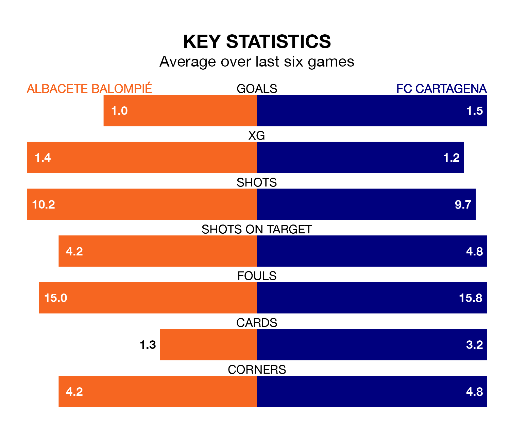

Struggling FC Cartagena face Albacete Balompié away at the Estadio Carlos Belmonte on Saturday looking to build on a win in their last league outing.
After securing all three points with a 1-0 victory over SD Amorebieta on January 27, Cartagena sit 20th in the Segunda División.
They travel to play an Albacete side 16th in the standings, who lost in their last match, 2-1 against Burgos CF, on January 28.
Albacete are in bad form in the Segunda División, with one win and a draw from their last six games.
With four wins and two losses over that period, Cartagena's form is much better – they have taken 12 points from 18, compared to the home side's four.
With 24 goals in 24 games so far this season, the visitors are scoring at below the league average rate with 1.0 goals per game. And they are conceding more than average, letting in 35 goals at a rate of 1.5 per game.
Albacete, meanwhile, are average scorers, with 1.2 goals per game. They have conceded 1.5 goals per game.
In the last five years, Albacete and Cartagena have played each other on five occasions. Albacete won one of them, Cartagena two, and they drew twice.
On average, Albacete scored 1.2 goals and Cartagena 1.4 in those matches.
Their last meeting was on November 19, when they played out a 1-1 draw.
Saturday's match will be refereed by Iosu Galech Apezteguía, who has taken charge of 12 Segunda División games so far this season, issuing two red cards and booking 53 players. He has awarded one penalty.
The last Albacete game Galech Apezteguía refereed was a 2-2 home draw with SD Amorebieta on August 20. His last Cartagena match was their 3-0 loss at home against Leganés on November 5.
Updated: 15:45 (UTC), 02/02/24